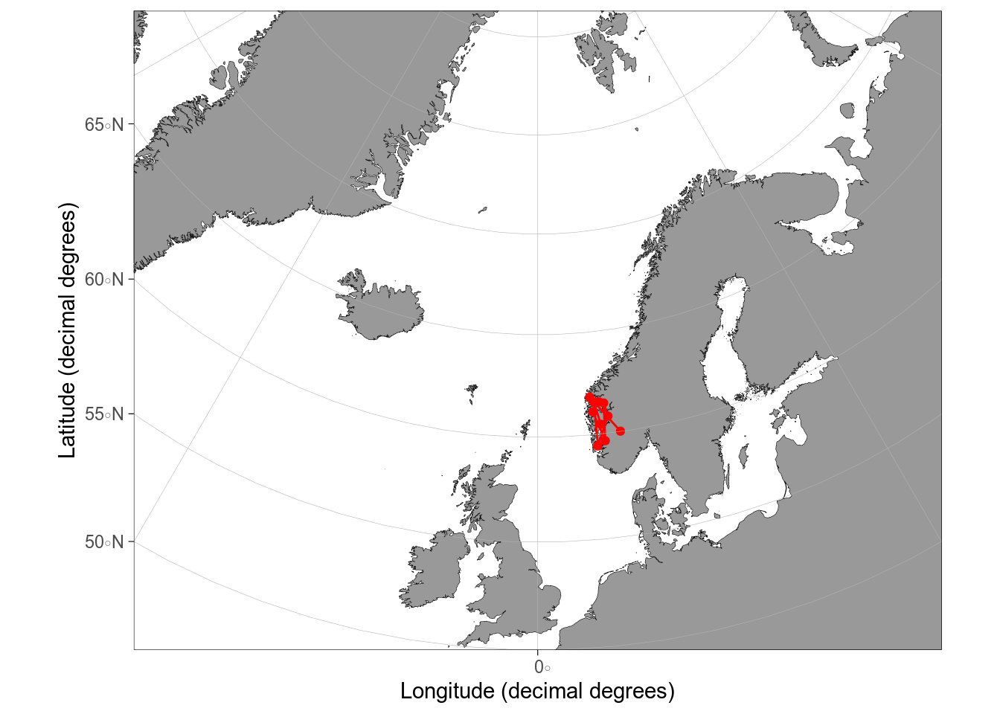

Biologists need almost as many maps as geographers, perhaps to show where our field sites are, the range of a species, or the migration path of a bird.
Typically, the data we want to show is added to a base map. These can be added to different types of base map
vector map showing the coastline, and perhaps political borders, rivers and other features
A map made of downloaded tiles (similar to how Google maps works)
A raster (made of pixels)
Terminology
Small scale vs large scale? The terminology is confusing!
Map scales are given as a ratio. A world map might have a scale of 1:100000000. 1 cm on the map represents 100000000 cm on the ground - a ratio of 1/100000000. A small number hence a small-scale map.
Conversely, a map of a city might have a scale of 1:25000. 1 cm on the map represents 25000 cm on the ground - a ratio of 1/25000. A large number hence a large-scale map.
Large-scale maps are usually high resolution and cover a small spatial extent.
20.1 Vector base maps
20.1.1rnaturalearth
The rnaturalearth package makes Natural Earth data available. Natural Earth features include coastlines, rivers, bathymetry, political borders, roads and railways at scales 1:10m, 1:50m, and 1:110 million. The rnaturalearth package includes coastline and country data at the small and medium scale. A companion package rnaturalearthhires has the large scale (1:10 million) data. Other datasets from Natural Earth can be downloaded directly from the website or with ne_download()
sf and sp are both packages for geospatial data. sf is the newer package that supports the “simple features” standard and is what I strongly recommend.
Rivers and lakes
Sometimes the coastline and national borders are sufficient. Sometimes they aren’t very informative and you want to add more features, such as rivers, lakes and cities. This can be done with data from Natural Earth (or other sources).
# download if neededif(!file.exists("maps/ne_10m_rivers_europe.shp")){ne_download(scale =10, type ="rivers_lake_centerlines", category ="physical", destdir ="maps/", load =FALSE)# major riversne_download(scale =10, type ="lakes", category ="physical", destdir ="maps/", load =FALSE)# major lakes}rivers<-ne_load(scale =10, type ="rivers_lake_centerlines", destdir ="maps", returnclass ="sf")lakes<-ne_load(scale =10, type ="lakes", destdir ="maps", returnclass ="sf")ggplot()+geom_sf(data =europe)+geom_sf(data =rivers, colour ="blue", linewidth =0.2)+geom_sf(data =lakes, fill ="lightblue")+coord_sf(xlim =c(5, 30), ylim =c(55, 71))
Figure 20.1: Lakes and rivers
Extra rivers and lakes for Europe and N. America are available from Natural Earth, but for a large-scale map, other data sets may be better, for example from Noregs vassdrags- og energidirektorat.
20.1.2ggOceanMaps
ggOceanMaps is, as the name suggests, focused on ocean map, with coastlines, bathymetry and also glaciers. ggOceanMaps requires ggOceanMapsData, which needs to be installed separately
library(ggOceanMaps)#limits are given longitude min/max, latitude min/maxbasemap(limits =c(-30, 30, 50, 80), bathymetry =TRUE, glaciers =TRUE)
Exercise
Make a map of the Nordic Seas using either rnaturalearth or ggOceanMaps.
20.1.3 Other vector files
The maps in rnaturalearth and ggOceanMaps are good and the global and regional scale, but lack resolution for local scale maps, and may lack features we are interested in.
For such maps we need to find alternative resources. These could be a shapefile, GeoJSON or GeoPackage file, all of which can be imported with sf::st_read().
Shapefiles
A “shapefile” is not one file but collection of several files in the same directory, only of which has the extension “.shp”.
Linking to GEOS 3.6.2, GDAL 2.2.3, PROJ 4.9.3; sf_use_s2() is TRUE
# https://kartkatalog.geonorge.no/metadata/norske-fylker-og-kommuner-illustrasjonsdata-2021-klippet-etter-kyst/f08fca3c-33ee-49b9-be9f-028ebba5e460)# This map will be out of date when fylker are reorganisedfylker<-st_read("data/fylker2021.json")
Reading layer `fylker2021' from data source
`/home/gbsrt/Documents/teaching/biostats-1/WorkingInR/data/fylker2021.json'
using driver `GeoJSON'
Simple feature collection with 11 features and 2 fields
Geometry type: MULTIPOLYGON
Dimension: XY
Bounding box: xmin: -77298.97 ymin: 6448400 xmax: 1115097 ymax: 7939977
Projected CRS: 25833
Most geographic data are given with latitude and longitude, but sometimes, especially for local-regional maps, the data are given as Universal Transverse Mercator (UTM) coordinates instead.
UTM coordinates are a projection of the spherical Earth onto one of 60 flat surfaces.
Most modern latitude-longitude data will use the WGS84 geodetic standard. Older data might use other standards.
You can find the coordinate system of a sf class object with sf::st_crs().
This gives a lot of information, the most important is that the coordinate reference systems is UTM zone 33N.
If we need to change a coordinate reference systems, we can do that with sf::st_transform(). You need to know the EPSG code of the target reference system, or the wkt. The code for WGS84 is 4326.
geom_sf() will automatically transform coordinate systems (if they are specified).
20.2 Tiled basemaps
Tiled basemaps can be used with either ggspatial or ggmap packages. I recommend using ggspatial as it is consistent with the other mapping tools used here.
If you use a tiled map background, you should attribute the source (e.g., “Copyright OpenStreetMap contributors” when using an OpenStreetMap-based tiles).
20.2.1ggspatial
We can add a tiled-basemap to a plot with annotation_map_tile(). Here, we need to use coord_sf() to set the map extent and coordinate reference system as we have not added any sf layers with geom_sf(). Downloaded tiles will be stored in the maps directory (which you may need to make first).
ggplot()+annotation_map_tile( type ="osm", cachedir ="maps/", zoomin =-1)+# sets the zoom level relative to the defaultcoord_sf( xlim =c(4.5, 6), ylim =c(60.5, 61), crs =4326)# EPSG code for WGS84
Several different types of maps are available (see rosm::osm.types()) and more can be added.
20.2.2ggmap
The ggmap package lets you use Google Maps and other similar maps as a basemap.
googlemaps
ggmap can use maps and satellite image from Google, but you need to register for an API key. You shouldn’t be charged unless you make a lot of maps (more than 20000 per month).
Maps made with a tiled background can appear cluttered with unnecessary information. They are probably best for small areas.
Exercise
Make a tiled map that shows your favourite holiday destination.
20.3 Raster basemaps
Rasters can be used to show maps of continuous data, for example, elevation or sea surface temperature.
20.3.1terra
The terra package can import raster images in several formats, including GeoTIFF.
terra vs raster vs stars packages
The terra package is an update to the widely-used raster package. It should be faster and easier to use.
stars is designed for spatio-temporal arrays. There are some things it cannot do that terra can (and vice versa) but has better integration with sf and ggplot2.
Rasters imported with terra are easy to plot with the base R plot() function, but if we want to use ggplot(), we have to first convert to an sf object.
library(terra)# import digital elevation model# data from https://topotools.cr.usgs.gov/gmted_viewer/viewer.htmnorway_dem<-rast("data/50N000E_20101117_gmted_med300.tif")# crop to vestland and convert to sf objectvestland_extent<-ext(4.5, 9, 59, 62)vestland_dem<-crop(norway_dem, vestland_extent)|>as.points()|>st_as_sf()#rename the data layernames(vestland_dem)[1]<-"Elevation"# plotggplot(vestland_dem)+geom_sf(aes(colour =Elevation))
If the raster is in UTM coordinates, it is possible to convert to a data.frame and then plot with geom_raster(). Then ggplot() just treats it as regular plot and does not know that it is a map.
20.4 Adding data to the basemap
After deciding what type of base map to draw, we can add the data we want to show with the map. This can be
points, line, and polygons
Shaded political units (a cloropleth map)
A grid of values (raster)
20.4.1 points/lines/polygons
Points lines and polygons can be added to the base map. If the data are already a sf object they can be plotted with geom_sf().
# aquaculture sites downloaded from Barentswatch.no/fiskinfoaquaculture<-st_read("data/flate-ihht-akvakulturregisteret20220928.geojson")
Reading layer `flate-ihht-akvakulturregisteret20220928' from data source
`/home/gbsrt/Documents/teaching/biostats-1/WorkingInR/data/flate-ihht-akvakulturregisteret20220928.geojson'
using driver `GeoJSON'
Simple feature collection with 1330 features and 4 fields
Geometry type: MULTIPOLYGON
Dimension: XY
Bounding box: xmin: 4.660283 ymin: 58.01472 xmax: 30.41932 ymax: 71.02117
Geodetic CRS: 4326
library(ggspatial)# GPS tracking data of osprey. Data from https://datadryad.org/stash/dataset/doi:10.5061%2Fdryad.w6m905qt2osprey<-read_delim("maps/osprey/06982.txt", locale =locale(decimal_mark =","))|>janitor::clean_names()# ggOceanMapsbasemap(data =osprey)+geom_spatial_path(aes(x =longitude_e, y =latitude_n, colour =speed), data =osprey, linewidth =1)+labs(colour =expression(Speed~km~h^{-1}))

geom_spatial_point() assumes that the data are latitude-longitude coordinates. It they are UTM, you will need to use the crs argument with the correct EPSG code.
geom_path() vs geom_line()
geom_path() draws a line from the first point in the dataset to the second and so on. This is useful for plotting on maps with geom_spatial_path() (and ordinations).
geom_line() draws a line from the left-most point to the next left-most point in the dataset. This is useful for plotting timeseries.
Degrees minutes and seconds
For latitude-longitude data, we recommend using decimal degrees (Bergen is at 60.3807°N, 5.3323°E). But archived data can be in all sorts of unhelpful formats, such as degrees minutes and seconds (Bergen is at 60° 22’ 50.52” N 5° 19’ 56.28” E). If you get data like this, you need to convert it to decimal degrees. The parzer package can help (it is like lubridate for latitude-longitude data). For example:
Make a map to show the hexabromobenzene (HBB) concentrations in the blubber.
20.4.2 Cloropleth maps
Cloropleth maps are useful for plotting data that have been aggregated to a geographic unit (kommune, fylke, country etc). A sf object is a special type of data frame that we can filter(), mutate() or left_join() to other data frames. We need a tibble with the data that we can join to the sf object with the geographic units. Here, I use data on 2021 phosphorous discharge in municipal wastewater from SSB and join it by Fylkesnummer, and plot it by setting fill in the aes.
p_discharge<-readxl::read_excel(path ="data/05280_20230421-012359.xlsx", skip =4, n_max =11)|>janitor::clean_names()|>separate_wider_regex( cols =x1, # split fist column patterns =c(Fylkesnummer ="\\d{2}", " ", Fylkesnavn =".*"))# using regular expressions# \\d{2} = 2 numbers, " " = space, ".*" = any number of any character, ie everything else# join to fylkerfylker_discharge<-fylker|>left_join(p_discharge, by ="Fylkesnummer")ggplot(fylker_discharge)+geom_sf(aes(fill =total_discharge))+labs(fill ="Wastewater\nP discharge\n(tonnes)")
Figure 20.2: Total phosphate discharge in municipal wastewater by fylke.
Cartograms
Sometimes cloropleth maps can be misleading. An alternative is to warp space so that the area of each region is proportional to the value. This is a cartogram, which can be made with the cartogram package.
library(cartogram)# simplify sf object for speedfylker_discharge_sim<-sf::st_simplify(fylker_discharge, dTolerance =1000)# make cartogramkart<-cartogram_cont(fylker_discharge_sim, weight ="total_discharge", itermax =5)# plot cartogramggplot(kart)+geom_sf(aes(fill =total_discharge))+labs(fill ="Wastewater\nP discharge\ntonnes")+theme(legend.position =c(.99, .01), legend.justification =c(1, 0))
Figure 20.3: Cartogram showing total phosphate discharge in municipal wastewater by fylke.
Exercise
With rnaturalearth data, make a world map that shows the population (column pop_est) of each country.
20.4.3 raster
Raster data, perhaps the output of a model, can also be added to maps, using code similar to that for plotting a raster basemap.
20.5 Scalebars, north pointer etc
Scalebars and north pointers can be added with the ggspatial package or the ggsn package. North points are not very useful if the map has gridlines as these already indicate north. A scalebar can be useful, especially for large scale map. On small scale maps, they can be inaccurate as the scale varies.
Scale on map varies by more than 10%, scale bar may be inaccurate
20.6 Hints for maps
Keep it simple. Remove unnecessary features (do you really need to show the bathymetry?) and use appropriate scale data for the base map (too high resolution takes a long time to plot and can look worse).
Use facets as necessary (different species, different years etc).
If you need multiple colour scales, the ggnewscale package can help. Use inset maps (Chapter 19) to show your location in context.
20.6.1 Projections
The Earth is an oblate sphere and needs projecting to plot in two dimensions. This inevitably leads to distortions, especially for maps with a large extent. Different projections have different properties and may be suitable for different purposes or regions. ggOceanMaps can automatically select a projection based on the location, otherwise the map projection can be set using coord_sf().
The projection wizard can help choose a projection for a given area (copy the PROJ string).
world<-ne_countries(scale ="medium", returnclass ="sf")default<-ggplot(world)+geom_sf()mollweide<-ggplot(world)+# Equal-area world map projectiongeom_sf()+coord_sf(crs ="+proj=moll")# projection specified with a 'proj' stringsf_use_s2(FALSE)# might need to turn spherical geometry for some projections
Spherical geometry (s2) switched off
polar_lambert<-world|># !important - don't crop to tightly or crop lines will show in plotst_crop(y =c(xmin =-180, ymin =50, xmax =180, ymax =90))|>ggplot()+# Transverse cylindrical equal-areageom_sf()+# coord_sf(crs = "+proj=moll")# projection specified with a proj stringcoord_sf(crs ='+proj=laea +lon_0=14.4140625 +lat_0=90 +datum=WGS84 +units=m +no_defs', ylim =c(100000, -3500000), # xlim/ylim in units of projection xlim =c(-2000000, 2000000))# here in metres
although coordinates are longitude/latitude, st_intersection assumes that they
are planar
Warning: attribute variables are assumed to be spatially constant throughout
all geometries
default/mollweide/polar_lambert
Exercise
Change the projection of one of the small-scale maps you made previously.
---editor: visualexecute: message: false---# Making maps in R```{r}#| label: tidyverse#| include: falselibrary(tidyverse)library(patchwork)source("R/setup.R")```Biologists need almost as many maps as geographers, perhaps to show where our field sites are, the range of a species, or the migration path of a bird.Typically, the data we want to show is added to a base map.These can be added to different types of base map- vector map showing the coastline, and perhaps political borders, rivers and other features- A map made of downloaded tiles (similar to how Google maps works)- A raster (made of pixels)::: callout-tip## TerminologySmall scale vs large scale?The terminology is confusing!Map scales are given as a ratio.A world map might have a scale of 1:100000000.1 cm on the map represents 100000000 cm on the ground - a ratio of 1/100000000.A small number hence a small-scale map.Conversely, a map of a city might have a scale of 1:25000.1 cm on the map represents 25000 cm on the ground - a ratio of 1/25000.A large number hence a large-scale map.Large-scale maps are usually high resolution and cover a small spatial extent.:::## Vector base maps### `rnaturalearth`The `rnaturalearth` package makes [Natural Earth](http://www.naturalearthdata.com/) data available.Natural Earth [features include](https://www.naturalearthdata.com/features/) coastlines, rivers, bathymetry, political borders, roads and railways at scales 1:10m, 1:50m, and 1:110 million.The `rnaturalearth` package includes coastline and country data at the small and medium scale.A companion package `rnaturalearthhires` has the large scale (1:10 million) data.Other datasets from Natural Earth can be downloaded directly from the [website](https://www.naturalearthdata.com/downloads/) or with `ne_download()````{r}#| label: rnaturalearth#| results: hidelibrary(rnaturalearth)# install.packages("rnaturalearthhires", repos = "https://ropensci.r-universe.dev")world <-ne_countries(scale =110, returnclass ="sf") small_scale_map <-ggplot() +geom_sf(data = world) +coord_sf(xlim =c(-20, 50), ylim =c(33, 80)) +ggtitle("Europe")europe <-ne_countries(scale =50, returnclass ="sf", continent ="Europe") medium_scale_map <-ggplot() +geom_sf(data = europe) +coord_sf(xlim =c(5, 30), ylim =c(55, 71)) +ggtitle("Norden")norway <-ne_countries(scale =10, returnclass ="sf", country ="Norway") large_scale_map <-ggplot() +geom_sf(data = norway) +coord_sf(xlim =c(4, 9), ylim =c(59, 62)) +ggtitle("Vestland")# combine maps with patchworklibrary(patchwork)small_scale_map + medium_scale_map + large_scale_map````coord_sf()` is used to show only part of the map.::: callout-tip## `sf` and `sp` packages`sf` and `sp` are both packages for geospatial data.`sf` is the newer package that supports the "simple features" standard and is what I strongly recommend.:::::: callout-tip## Rivers and lakesSometimes the coastline and national borders are sufficient.Sometimes they aren't very informative and you want to add more features, such as rivers, lakes and cities.This can be done with data from [Natural Earth](http://www.naturalearthdata.com/) (or other sources).```{r}#| label: fig-lakes-rivers#| fig-cap: Lakes and rivers# download if neededif(!file.exists("maps/ne_10m_rivers_europe.shp")){ne_download(scale =10, type ="rivers_lake_centerlines", category ="physical", destdir ="maps/", load =FALSE) # major riversne_download(scale =10, type ="lakes", category ="physical", destdir ="maps/", load =FALSE) # major lakes}rivers <-ne_load(scale =10, type ="rivers_lake_centerlines", destdir ="maps", returnclass ="sf")lakes <-ne_load(scale =10, type ="lakes", destdir ="maps", returnclass ="sf")ggplot() +geom_sf(data = europe) +geom_sf(data = rivers, colour ="blue", linewidth =0.2) +geom_sf(data = lakes, fill ="lightblue") +coord_sf(xlim =c(5, 30), ylim =c(55, 71))```Extra rivers and lakes for Europe and N. America are available from Natural Earth, but for a large-scale map, other data sets may be better, for example from [Noregs vassdrags- og energidirektorat](http://nedlasting.nve.no/gis/).:::### `ggOceanMaps``ggOceanMaps` is, as the name suggests, focused on ocean map, with coastlines, bathymetry and also glaciers.`ggOceanMaps` requires `ggOceanMapsData`, which needs to be installed separately```{r}#| label: install-ggOceanMapsData#| eval: falseremotes::install_github("MikkoVihtakari/ggOceanMapsData")```Now `ggOceanMaps` is ready to use.```{r}#| label: ggOceanMaps#| message: falselibrary(ggOceanMaps)#limits are given longitude min/max, latitude min/maxbasemap(limits =c(-30, 30, 50, 80),bathymetry =TRUE,glaciers =TRUE)```::: callout-note## ExerciseMake a map of the Nordic Seas using either `rnaturalearth` or `ggOceanMaps`.:::### Other vector filesThe maps in `rnaturalearth` and `ggOceanMaps` are good and the global and regional scale, but lack resolution for local scale maps, and may lack features we are interested in.For such maps we need to find alternative resources.These could be a shapefile, GeoJSON or GeoPackage file, all of which can be imported with `sf::st_read()`.::: callout-tip## ShapefilesA "shapefile" is not one file but collection of several files in the same directory, only of which has the extension ".shp".:::Good sources of data for Norway include:- [GeoNorge](https://www.geonorge.no/)- [Miljødirektoratet](https://kartkatalog.miljodirektoratet.no/)This is a map of the fylke of Norway.```{r}#| label: fylkerlibrary(sf)# https://kartkatalog.geonorge.no/metadata/norske-fylker-og-kommuner-illustrasjonsdata-2021-klippet-etter-kyst/f08fca3c-33ee-49b9-be9f-028ebba5e460)# This map will be out of date when fylker are reorganisedfylker <-st_read("data/fylker2021.json")ggplot(fylker) +geom_sf()```::: callout-tip## Coordinate reference systemsMost geographic data are given with latitude and longitude, but sometimes, especially for local-regional maps, the data are given as [Universal Transverse Mercator (UTM)](https://en.wikipedia.org/wiki/Universal_Transverse_Mercator_coordinate_system) coordinates instead.UTM coordinates are a projection of the spherical Earth onto one of 60 flat surfaces.Most modern latitude-longitude data will use the WGS84 geodetic standard.Older data might use other standards.You can find the coordinate system of a `sf` class object with `sf::st_crs()`.```{r}sf::st_crs(fylker)```This gives a lot of information, the most important is that the coordinate reference systems is UTM zone 33N.If we need to change a coordinate reference systems, we can do that with `sf::st_transform()`.You need to know the [EPSG](https://epsg.io/) code of the target reference system, or the wkt.The code for WGS84 is 4326.```{r}fylker2 <- sf::st_transform(fylker, crs =4326)````geom_sf()` will automatically transform coordinate systems (if they are specified).:::## Tiled basemapsTiled basemaps can be used with either `ggspatial` or `ggmap` packages.I recommend using `ggspatial` as it is consistent with the other mapping tools used here.If you use a tiled map background, you should attribute the source (e.g., "Copyright OpenStreetMap contributors" when using an OpenStreetMap-based tiles).### `ggspatial`We can add a tiled-basemap to a plot with `annotation_map_tile()`.Here, we need to use `coord_sf()` to set the map extent and coordinate reference system as we have not added any `sf` layers with `geom_sf()`.Downloaded tiles will be stored in the maps directory (which you may need to make first).```{r}#| label: anotation-map-tile#| fig-width: 8#| message: falseggplot() +annotation_map_tile(type ="osm", cachedir ="maps/", zoomin =-1) +# sets the zoom level relative to the defaultcoord_sf(xlim =c(4.5, 6), ylim =c(60.5, 61),crs =4326) # EPSG code for WGS84```Several different types of maps are available (see `rosm::osm.types()`) and more can be added.```{r}#| label: map-providers#| echo: false#| fig-width: 8#| message: false# rosm::osm.types()c("osm", "stamenwatercolor", "cartodark", "cartolight") |>map(~{ggplot() +annotation_map_tile(type = .x, cachedir ="maps/", zoomin =-1) +coord_sf(xlim =c(5.24, 5.36), ylim =c(60.37, 60.41),crs =4326) +ggtitle(.x) +theme(axis.text =element_blank(),axis.ticks =element_blank(), title =element_text(size =11), plot.margin =margin(1, 1, 1, 1))}) |> patchwork::wrap_plots()```### `ggmap`The `ggmap` package lets you use Google Maps and other similar maps as a basemap.::: callout-tip## googlemaps`ggmap` can use maps and satellite image from Google, but you need to [register](https://mapsplatform.google.com/) for an API key.You shouldn't be charged unless you make a lot of maps (more than 20000 per month).:::```{r}#| label: ggmap#| message: falselibrary(ggmap)bergen <-get_map(location =c(5.24, 60.37, 5.36, 60.41), # left/bottom/right/topsource ="stamen")ggmap(bergen)```Maps made with a tiled background can appear cluttered with unnecessary information. They are probably best for small areas.::: callout-note## ExerciseMake a tiled map that shows your favourite holiday destination.:::## Raster basemapsRasters can be used to show maps of continuous data, for example, elevation or sea surface temperature.### `terra`The `terra` package can import raster images in several formats, including GeoTIFF.::: callout-tip## `terra` vs `raster` vs `stars` packagesThe `terra` package is an update to the widely-used `raster` package.It should be faster and easier to use.`stars` is designed for spatio-temporal arrays.There are some things it cannot do that `terra` can (and vice versa) but has better integration with `sf` and `ggplot2`.:::Rasters imported with `terra` are easy to plot with the base R `plot()` function, but if we want to use `ggplot()`, we have to first convert to an `sf` object.```{r}#| label: terra#| message: falselibrary(terra)# import digital elevation model# data from https://topotools.cr.usgs.gov/gmted_viewer/viewer.htmnorway_dem <-rast("data/50N000E_20101117_gmted_med300.tif")# crop to vestland and convert to sf objectvestland_extent <-ext(4.5, 9, 59, 62)vestland_dem <-crop(norway_dem, vestland_extent) |>as.points() |>st_as_sf() #rename the data layernames(vestland_dem)[1] <-"Elevation"# plotggplot(vestland_dem) +geom_sf(aes(colour = Elevation))```If the raster is in UTM coordinates, it is possible to convert to a data.frame and then plot with `geom_raster()`.Then `ggplot()` just treats it as regular plot and does not know that it is a map.<!-- ```{r} --><!-- library(stars) --><!-- dem <- read_stars("data/50N000E_20101117_gmted_med300.tif") --><!-- #crop dem --><!-- bbox <- st_bbox(c(xmin = 4.5, xmax = 9, ymax = 62, ymin = 59), crs = st_crs(4326)) --><!-- dem_cropped <- st_crop(x = dem, y = bbox) --><!-- ggplot() + --><!-- geom_stars(data = dem_cropped) + --><!-- # geom_sf(data = st_crop(norway, bbox), fill = NA, colour = "white") + --><!-- labs(fill = "Elevation m") --><!-- ``` -->## Adding data to the basemapAfter deciding what type of base map to draw, we can add the data we want to show with the map.This can be- points, line, and polygons- Shaded political units (a cloropleth map)- A grid of values (raster)### points/lines/polygonsPoints lines and polygons can be added to the base map.If the data are already a `sf` object they can be plotted with `geom_sf()`.```{r}#| label: second-sf#| message: false# aquaculture sites downloaded from Barentswatch.no/fiskinfoaquaculture <-st_read("data/flate-ihht-akvakulturregisteret20220928.geojson")# with rnaturalearthggplot() +geom_sf(data = europe) +geom_sf(data = aquaculture, colour ="red") +coord_sf(xlim =c(5, 30), ylim =c(55, 71)) # with ggOceanMapsbasemap(limits =c(-30, 30, 50, 80)) +geom_sf(data = aquaculture, colour ="red")# with ggmapvestland <-get_map(location =c(4, 59, 8, 62),source ="stamen")# needs inherit.aes = FALSEggmap(vestland) +geom_sf(data = aquaculture, colour ="red", inherit.aes =FALSE)```Alternatively, you can make/import a tibble with the geographic data and add them to the basemap with the relevant spatially aware geom.So `geom_spatial_point()` rather than `geom_point()` and `geom_spatial_path()` rather than `geom_path()````{r}#| label: geom-spatial-points#| message: falselibrary(ggspatial)# GPS tracking data of osprey. Data from https://datadryad.org/stash/dataset/doi:10.5061%2Fdryad.w6m905qt2osprey <-read_delim("maps/osprey/06982.txt", locale =locale(decimal_mark =",")) |> janitor::clean_names()# ggOceanMapsbasemap(data = osprey) +geom_spatial_path(aes(x = longitude_e, y = latitude_n, colour = speed),data = osprey, linewidth =1) +labs(colour =expression(Speed~km~h^{-1}))````geom_spatial_point()` assumes that the data are latitude-longitude coordinates.It they are UTM, you will need to use the `crs` argument with the correct [EPSG code](https://epsg.io/?q=UTM).::: callout-tip## geom_path() vs geom_line()`geom_path()` draws a line from the first point in the dataset to the second and so on.This is useful for plotting on maps with `geom_spatial_path()` (and ordinations).`geom_line()` draws a line from the left-most point to the next left-most point in the dataset.This is useful for plotting timeseries.:::::: callout-tip## Degrees minutes and secondsFor latitude-longitude data, we recommend using decimal degrees (Bergen is at 60.3807°N, 5.3323°E).But archived data can be in all sorts of unhelpful formats, such as degrees minutes and seconds (Bergen is at 60° 22' 50.52" N 5° 19' 56.28" E).If you get data like this, you need to convert it to decimal degrees.The `parzer` package can help (it is like `lubridate` for latitude-longitude data).For example:```{r}#| label: parzerparzer::parse_lat("60° 22' 50.52''N")```:::::: callout-note## ExerciseDownload and import the [data](https://setac.onlinelibrary.wiley.com/action/downloadSupplement?doi=10.1002%2Fetc.5064&file=etc5064-sup-0002-Supplementary_dataset.xlsx) for [Andvik et al (2021)](https://doi.org/10.1002/etc.5064) on contaminants in orca.Make a map to show the hexabromobenzene (HBB) concentrations in the blubber.:::### Cloropleth mapsCloropleth maps are useful for plotting data that have been aggregated to a geographic unit (kommune, fylke, country etc).A `sf` object is a special type of data frame that we can `filter()`, `mutate()` or `left_join()` to other data frames.We need a tibble with the data that we can join to the `sf` object with the geographic units.Here, I use data on 2021 phosphorous discharge in municipal wastewater from [SSB](https://www.ssb.no/en/statbank/table/05280/) and join it by Fylkesnummer, and plot it by setting `fill` in the `aes`.```{r}#| label: fig-cloropleth#| message: false#| fig-cap: Total phosphate discharge in municipal wastewater by fylke.p_discharge <- readxl::read_excel(path ="data/05280_20230421-012359.xlsx",skip =4, n_max =11) |> janitor::clean_names() |>separate_wider_regex(cols = x1, # split fist columnpatterns =c(Fylkesnummer ="\\d{2}", " ", Fylkesnavn =".*"))# using regular expressions# \\d{2} = 2 numbers, " " = space, ".*" = any number of any character, ie everything else# join to fylkerfylker_discharge <- fylker |>left_join(p_discharge, by ="Fylkesnummer")ggplot(fylker_discharge) +geom_sf(aes(fill = total_discharge)) +labs(fill ="Wastewater\nP discharge\n(tonnes)")```::: callout-tip## CartogramsSometimes cloropleth maps can be misleading. An alternative is to warp space so that the area of each region is proportional to the value. This is a cartogram, which can be made with the `cartogram` package.```{r}#| label: fig-cartogram#| message: false#| fig-cap: Cartogram showing total phosphate discharge in municipal wastewater by fylke.library(cartogram)# simplify sf object for speedfylker_discharge_sim <- sf::st_simplify(fylker_discharge, dTolerance =1000)# make cartogramkart <-cartogram_cont(fylker_discharge_sim, weight ="total_discharge", itermax =5)# plot cartogramggplot(kart) +geom_sf(aes(fill = total_discharge)) +labs(fill ="Wastewater\nP discharge\ntonnes") +theme(legend.position =c(.99, .01), legend.justification =c(1, 0))```:::::: callout-note## ExerciseWith `rnaturalearth` data, make a world map that shows the population (column pop_est) of each country.:::### rasterRaster data, perhaps the output of a model, can also be added to maps, using code similar to that for plotting a raster basemap.## Scalebars, north pointer etcScalebars and north pointers can be added with the `ggspatial` package or the `ggsn` package.North points are not very useful if the map has gridlines as these already indicate north.A scalebar can be useful, especially for large scale map.On small scale maps, they can be inaccurate as the scale varies.```{r}#| label: annotations# with rnaturalearthggplot() +geom_sf(data = norway) +coord_sf(xlim =c(4, 9), ylim =c(59, 62)) +annotation_scale(location ="br") # br = bottom right```## Hints for mapsKeep it simple.Remove unnecessary features (do you really need to show the bathymetry?) and use appropriate scale data for the base map (too high resolution takes a long time to plot and can look worse).Use facets as necessary (different species, different years etc).If you need multiple colour scales, the `ggnewscale` package can help.Use inset maps (@sec-combining-plots) to show your location in context.### ProjectionsThe Earth is an oblate sphere and needs projecting to plot in two dimensions.This inevitably leads to distortions, especially for maps with a large extent.[Different projections](https://proj.org/operations/projections/index.html) have different properties and may be suitable for different purposes or regions.`ggOceanMaps` can automatically select a projection based on the location, otherwise the map projection can be set using `coord_sf()`.The [projection wizard](https://projectionwizard.org/#) can help choose a projection for a given area (copy the PROJ string).```{r}#| label: projections#| results: hideworld <-ne_countries(scale ="medium", returnclass ="sf")default <-ggplot(world) +geom_sf()mollweide <-ggplot(world) +# Equal-area world map projectiongeom_sf() +coord_sf(crs ="+proj=moll") # projection specified with a 'proj' stringsf_use_s2(FALSE) # might need to turn spherical geometry for some projectionspolar_lambert <- world |># !important - don't crop to tightly or crop lines will show in plotst_crop(y =c(xmin =-180, ymin =50, xmax =180, ymax =90)) |>ggplot() +# Transverse cylindrical equal-areageom_sf() +# coord_sf(crs = "+proj=moll")# projection specified with a proj stringcoord_sf(crs ='+proj=laea +lon_0=14.4140625 +lat_0=90 +datum=WGS84 +units=m +no_defs', ylim =c(100000, -3500000), # xlim/ylim in units of projectionxlim =c(-2000000, 2000000)) # here in metresdefault/mollweide/polar_lambert```::: callout-note## ExerciseChange the projection of one of the small-scale maps you made previously.:::<!-- ### Interactive maps --><!-- ### leaflets --><!-- ### coords on projected maps --><!-- better geom_path map --><!-- new example exercise -->::: callout-note## Further reading- [Spatial Data Science](https://r-spatial.org/book/)- [Visualizing geospatial data](https://clauswilke.com/dataviz/geospatial-data.html):::::: column-margin### Contributors {.unlisted .unnumbered}- Richard Telford:::